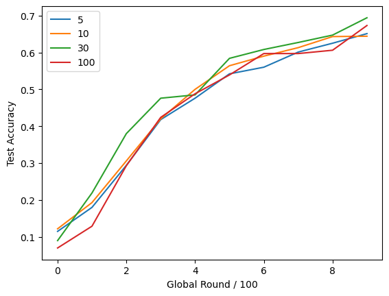
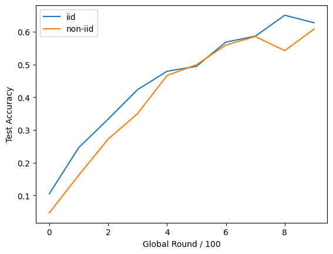

<!DOCTYPE html>
<html lang="en">
  <head>
    <meta charset="utf-8" />
    <meta name="viewport" content="width=device-width, initial-scale=1.0, maximum-scale=1.0, user-scalable=no" />

    <title>隐私保护大作业</title>
    <link rel="shortcut icon" href="./favicon.ico" />
    <link rel="stylesheet" href="./dist/reset.css" />
    <link rel="stylesheet" href="./dist/reveal.css" />
    <link rel="stylesheet" href="./dist/theme/black.css" id="theme" />
    <link rel="stylesheet" href="./css/highlight/tomorrow-night-bright.css" />


  </head>
  <body>
    <div class="reveal">
      <div class="slides"><section  data-markdown><script type="text/template">

# 隐私保护学术报告

胡弈南，张仝旭

</script></section><section ><section data-markdown><script type="text/template">

## 现有进度分享

- 考察不同客户端采样数的精准度曲线
- 考察不同数据分布下精准度曲线

</script></section><section data-markdown><script type="text/template">

### 客户端采样数

新模型为<font color='orange'>随机采样</font>的 n_client 个客户端的模型的平均值

能够有效降低通讯成本，但是会导致最终的模型产生偏倚

<center>
  
</center><!-- .element: class="fragment" -->

</script></section><section data-markdown><script type="text/template">

### 数据分布

非独立同分布情况下，各本地模型训练差距较大，导致模型的聚合效果较差

<center>
  
</center>

</script></section></section><section ><section data-markdown><script type="text/template">

## 研究思路

- 分布问题：正则项
- 通讯成本问题：稀疏化
- 隐私问题：差分隐私
- 精确度问题：神经网络

</script></section><section data-markdown><script type="text/template">

### 正则项

在损失函数上添加正则项，将本地模型约束在全局模型的一定范围内，缓解数据分布不同问题

$$L^\prime=L+\beta||W-W^g||$$

</script></section><section data-markdown><script type="text/template">

### 稀疏更新

仅保留最大的一部分更新量，减少通讯成本，但会导致一定程度上误差的积累

$$[0.1\ 2\ -0.2]\to [0\ 2\ 0]$$

</script></section><section data-markdown><script type="text/template">

### 隐私差分

部分隐私信息可以从模型中获取

在局部模型反馈至全局时，加入 $Lap(\frac{s}{\epsilon})$ 的噪声

</script></section><section data-markdown><script type="text/template">

### 神经网络

demo 中的神经网络的精确度只能训练到不到 $70\%$ 的正确率

尝试增加神经网络层数、更换激活函数等

```py
class MNIST_2NN(nn.Module):
    def __init__(self):
        super(MNIST_2NN, self).__init__()
        self.linear1 = nn.Linear(784, 200)
        self.linear2 = nn.Linear(200, 200)
        self.linear3 = nn.Linear(200, 10)

    def forward(self, x):
        x1 = torch.relu(self.linear1(x))
        x2 = torch.relu(self.linear2(x1))
        y = self.linear3(x2)
        return y
```

</script></section></section><section  data-markdown><script type="text/template">

## 感谢聆听！
</script></section></div>
    </div>

    <script src="./dist/reveal.js"></script>

    <script src="./plugin/markdown/markdown.js"></script>
    <script src="./plugin/highlight/highlight.js"></script>
    <script src="./plugin/zoom/zoom.js"></script>
    <script src="./plugin/notes/notes.js"></script>
    <script src="./plugin/math/math.js"></script>
    <script>
      function extend() {
        var target = {};
        for (var i = 0; i < arguments.length; i++) {
          var source = arguments[i];
          for (var key in source) {
            if (source.hasOwnProperty(key)) {
              target[key] = source[key];
            }
          }
        }
        return target;
      }

      // default options to init reveal.js
      var defaultOptions = {
        controls: true,
        progress: true,
        history: true,
        center: true,
        transition: 'default', // none/fade/slide/convex/concave/zoom
        slideNumber: true,
        plugins: [
          RevealMarkdown,
          RevealHighlight,
          RevealZoom,
          RevealNotes,
          RevealMath
        ]
      };

      // options from URL query string
      var queryOptions = Reveal().getQueryHash() || {};

      var options = extend(defaultOptions, {"width":1520,"height":950,"margin":0.04,"transition":"convex","slideNumber":true}, queryOptions);
    </script>


    <script>
      Reveal.initialize(options);
    </script>
  </body>
</html>
